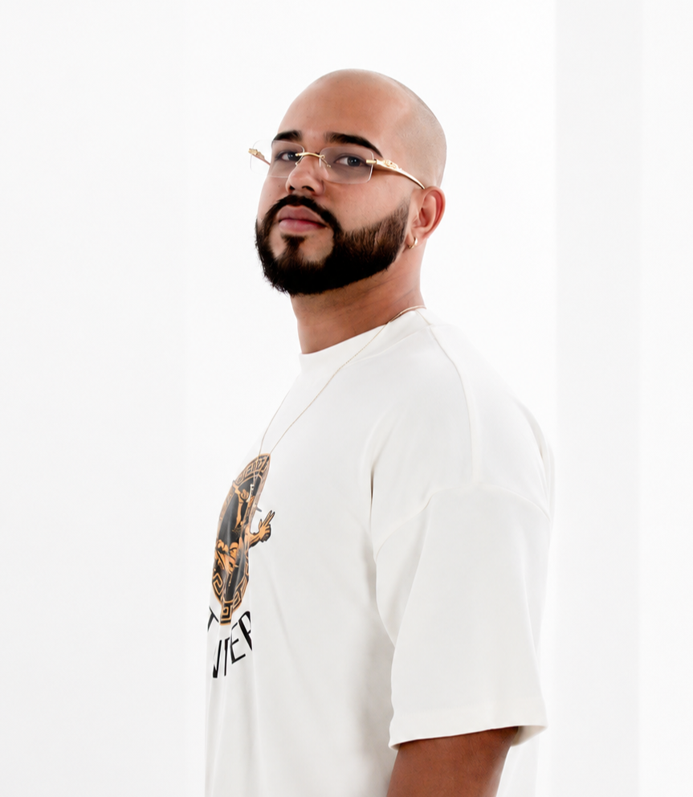

Portfólio Pessoal
Estudante de Sistemas de Informação com interesse em suporte técnico, redes e desenvolvimento web. Também desenvolvo projetos criativos através do projeto artístico “marcoalla”.

Atualmente curso Sistemas de Informação na UniProjeção e estou em busca da minha primeira oportunidade de estágio na área de Tecnologia da Informação. Possuo conhecimentos em Windows, redes de computadores, HTML/CSS, Pacote Office e criação de sites básicos.
Projeto artístico e digital envolvendo identidade visual, gerenciamento de redes sociais, criação de conteúdo e desenvolvimento de presença online.
Criação de páginas e sites básicos utilizando HTML e CSS, buscando desenvolver conhecimentos em desenvolvimento web e interfaces modernas.
Revitalização de fachadas prediais
Atuação em trabalhos técnicos em altura, seguindo normas de segurança e colaborando em equipe para execução de serviços operacionais e manutenção predial.